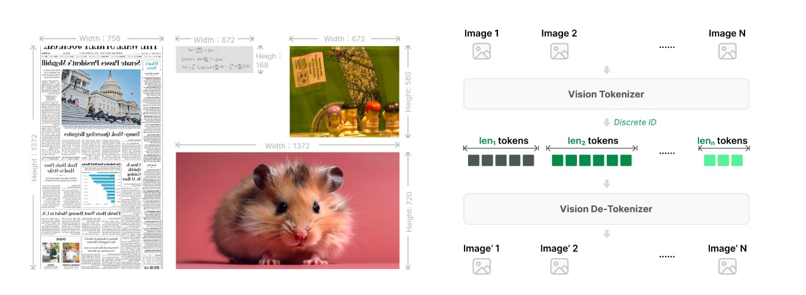

视觉材料直接进入请求
以根据截图修复页面为例，过去要把布局、文字和错误位置重新描述一遍。LongCat2.5的视觉文档允许把图片与文字放在同一请求中，图片可用编码数据或公开链接；视频则仅支持链接，由服务端下载解析。返回的理解仍要由代理宿主接到后续编辑操作。适合检查的问题很具体：截图里的数字、小字和控件关系是否被正确读出，修改是否落到相应文件。图像输入省去部分转述，不等于页面中的每个细节都会自动变成正确代码，也不代表资料留在本机。
LongCat 2.5 · 模型与API · 官方技术发布

以根据截图修复页面为例，过去要把布局、文字和错误位置重新描述一遍。LongCat2.5的视觉文档允许把图片与文字放在同一请求中，图片可用编码数据或公开链接；视频则仅支持链接，由服务端下载解析。返回的理解仍要由代理宿主接到后续编辑操作。适合检查的问题很具体：截图里的数字、小字和控件关系是否被正确读出，修改是否落到相应文件。图像输入省去部分转述，不等于页面中的每个细节都会自动变成正确代码，也不代表资料留在本机。
官方英文技术文章标为11月1日，中文文章晚一天发布，本期按近三日补充处理。作者描述以原生分辨率编码器和残差向量量化把视觉信号转成多层离散标记，再结合长轨迹训练与强化学习。其目标包括读界面、使用工具、继续执行，而不只是回答单个图片问题。网页、三维展示和业务分析案例展示了厂商期望的输出形态，但没有本次独立复现。较长任务还会受到工具权限、资料质量和中途失败影响，模型基准分数无法直接折算成用户一次交付的成功概率。
OpenCode官方接入说明提供LongCat服务商入口，认证后选择模型即可开始；也允许在配置中关闭默认开启的思考模式。API文档则指出，开启思考时温度固定为一点零，关闭时为零点七，传入其他值会被覆盖。对于已有评测脚本，这个细节会影响比较是否公平：界面接受了一个参数，不代表底层按它运行。兼容接口减少适配工作，却没有替团队决定文件权限、工具批准和测试标准。公开资料未在本次确认可下载的2.5权重与适用许可，不应顺带标为已验证开源部署。
官方价格页按每百万标记列出限时折扣：未缓存输入二元、缓存输入零点零四元、输出八元，并说明以平台及账单为准。长任务会重复带入上下文，是否命中缓存、重试多少次、需要多少输出，都会改变总费用；这里没有测得单任务成本。一个合适的小试验是给同一份截图和明确验收条件，记录首次产物、修改轮次、人工查错时间与账单，再检查完成文件。若只看第一次回答的速度或单价，很容易漏掉多轮纠正带来的等待和支出。